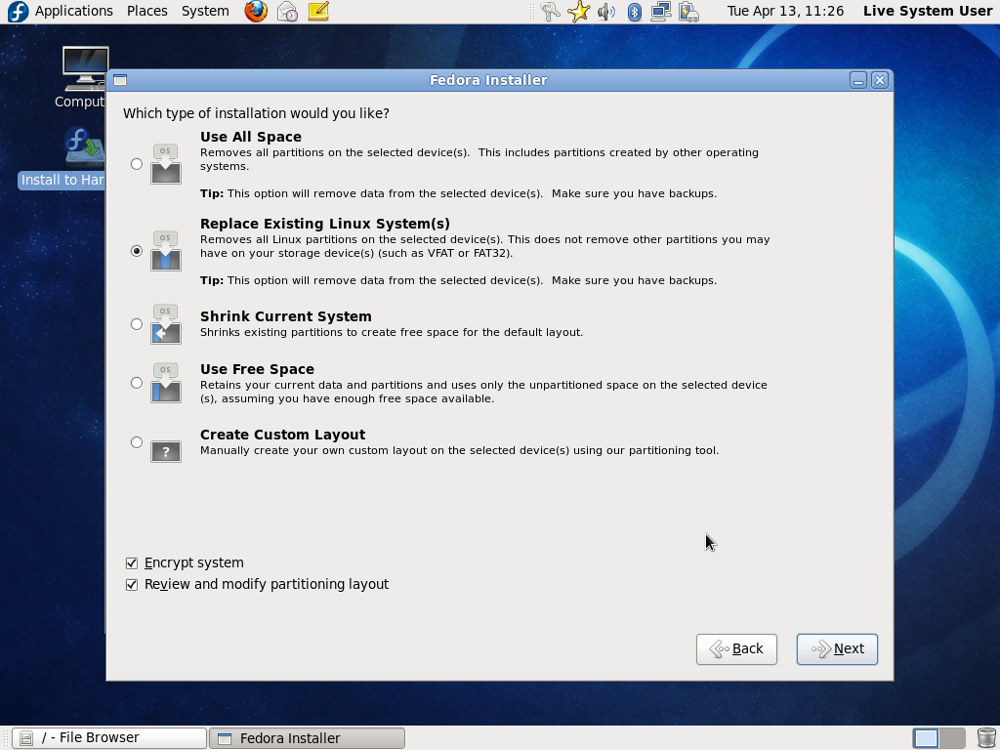
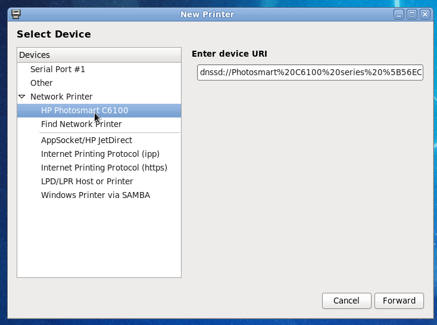
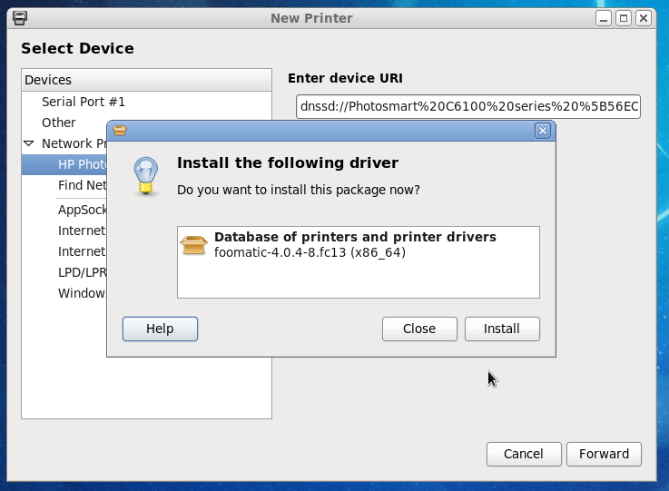
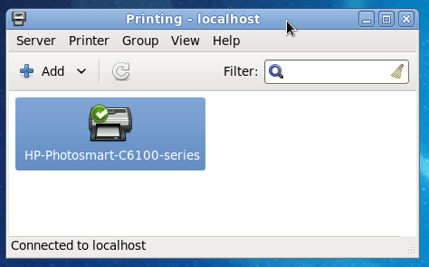
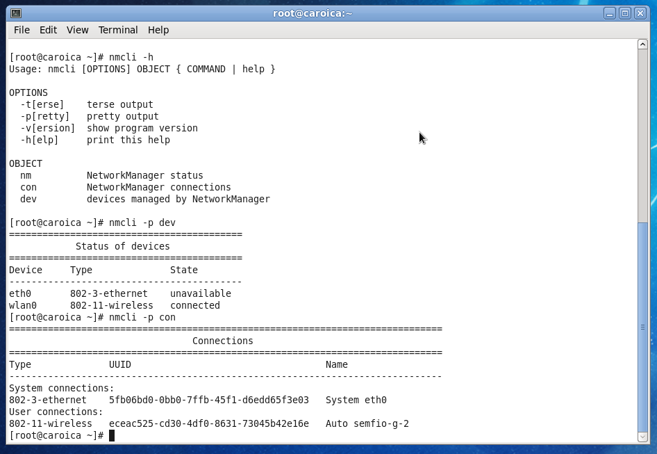
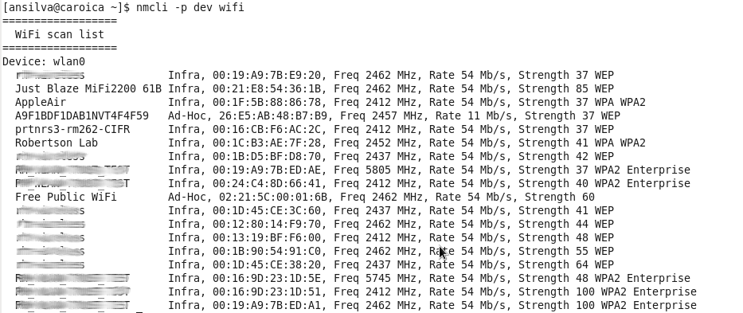
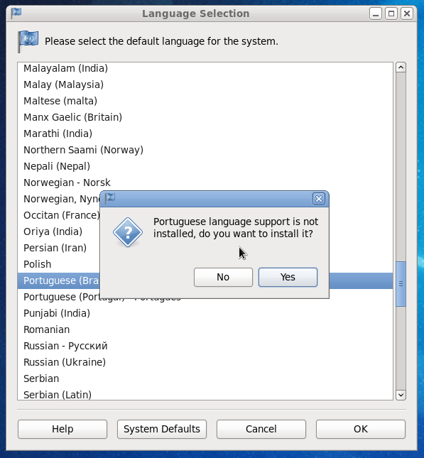
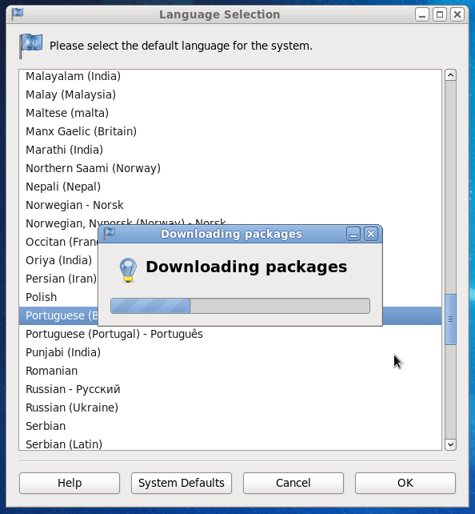
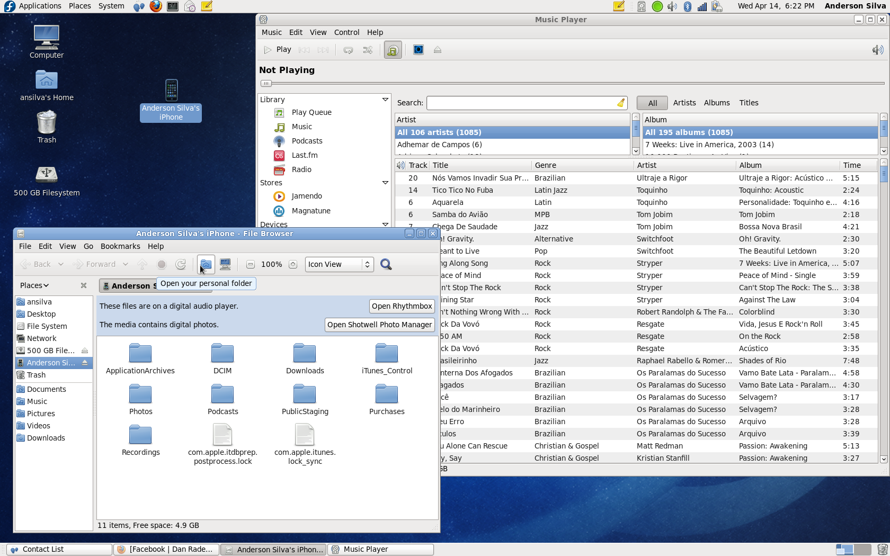
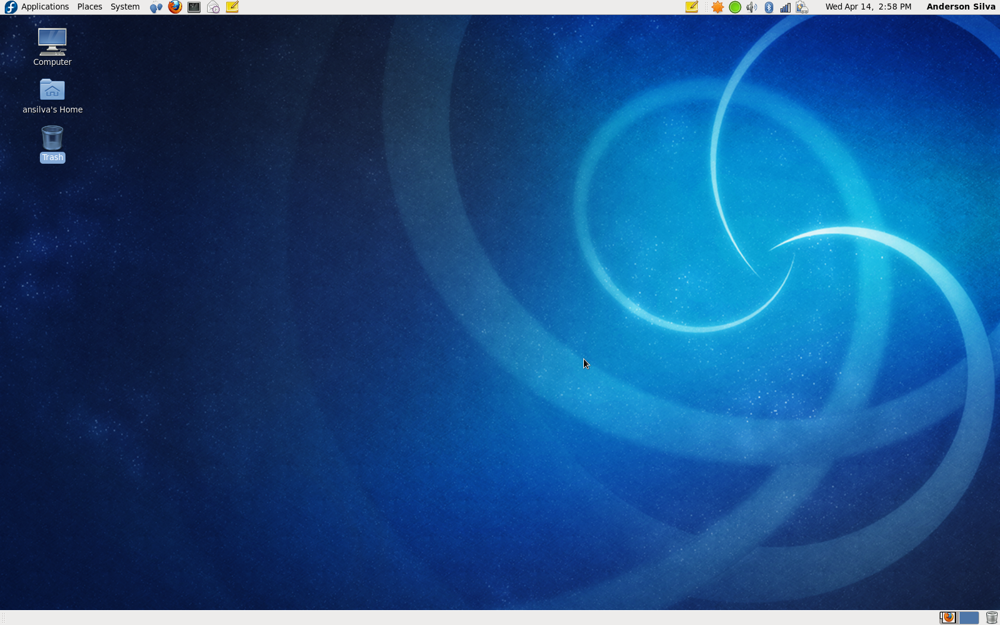

A quick look at what's coming with Fedora 13
It's Wednesday morning, and it's been exactly 24 hours since the Fedora Project released the beta for Fedora Linux 13th version. If you are not too familiar with Fedora's release schedule, let me give you a quick overview. The Fedora Project tries to release a new version of Fedora around May 1st and October 31st every year. Obviously as with most software projects these dates are goals, and not deadline. For example, Fedora 13, codenamed Goddard, is scheduled to be released on May 18th.
Usually a month or so before the final release of the latest Fedora version, there is a release of a beta, and that's what I am running right now. Like I said, the beta has only been out for 24 hours, and there is no way I've had the chance to go over every single new feature that's coming out with Goddard, but I've been able to verify a few, and those are the ones I will share with you.
Live "DVD" Installation
That's right, DVD. At least for this beta distribution Fedora Project has made available a 900+ MB iso for the live image of the OS. Their site does note that for the final release in May, the image will be back down to fit on a CD. The main reason for this change is the inclusion of OpenOffice to the live image. It's always worth reminding everyone that these live images can also be written to USB drives non-destructively; that is, you can make the disk bootable run and install Fedora live without reformatting your USB drive. For more information see: http://fedoraproject.org/wiki/FedoraLiveCD/USBHowTo
Screenshot 1: A new window in the Fedora live installer that allows the user to pick how they want the OS to be installed on the hard drive.
Printing
Remember that scene from 'Office Space' where Peter, Samir and Michael take the office printer to some isolated area and beat the daylights out of it? We've all had that same type of feeling towards printers. I'd even go as far as saying that Linux users may have suffered even more for lack of open source compatible drivers throughout the years. The problem hasn't been completely solved, but we are getting there one release at a time. Fedora 13 will introduce an easier automatic way for your printer drivers to get installed. It detects the printer available, and suggests which RPM needs to be installed to get your system working.

Screenshot 2: My HP Photosmart was automatically detected on the network when trying to add a printer.

Screenshot 3: Fedora suggest the driver needed to get my printing needs met.

Screenshot 4: I am ready to print
Network Manager Command Line Interface
One of the most user-friendly technologies to pop up around the Linux desktop in the past few years is arguably NetworkManager. It has made detecting network hardware, wifi SSIDs, and broadband cards as easy as plug it in, click, and you are connected. However, this friendliness did not come without a cost. For system administrators like me, the preference of a command line interface for NetworkManager made it virtually impossible to be used in server-based environments.
Fedora 13 will be trying to fill this gap by introducing nmcli, a command line utility that will allow users who prefer the command line to interact with NetworkManager. As of yesterday's Beta's release, this utility still doesn't have a main page, but I am trusting the Fedora community to have one up by the time the final release is out.

Screenshot 5: A couple of examples of nmcli where it shows the status of devices available on my laptop and the connections they are using.

Screenshot 6: nmcli -p dev wifi will show the SSIDs available for you to connect to.
I can tell NetworkManager to connect to my default SSID by running a command such as this:
[ansilva@caroica ~]$ nmcli -p con up uuid eceac525-cd30-4df0-8631-73045b42e16e Active connection state: activating Active connection path: /org/freedesktop/NetworkManager/ActiveConnection/
Languages:
I am originally from Brazil, and even though I don't think I've ever needed to change my language setting in Fedora, I do know enough people in Brazil, especially new Linux users, who find being able to switch languages in the distribution a nice perk. Fedora 13 will bring a yum plugin that automatically searches for the language RPMs when not already installed on the system.

Screenshot 7: Picking Portuguese as the default language will prompt yum to download the correct packages.

Screenshot 8: Automatic download. Once installed, just log out and log back in to see the changes.
iPhone, iPod Touch Support
I have to be honest, I was skeptical when it was announced that Fedora 13 would work with iPhones and iPod Touches, but I tried it and it worked! I typed in my iPhone passcode, plugged into the USB port, and Fedora recognized my device as a drive, as a camera and as a mp3 player. Very impressive!

Screenshot 9: My iPhone mounted on Fedora 13 showing my playlists under Rhythmbox.
If you need multimedia codecs to play your media, you can legally purchase them at: http://www.fluendo.com/. They even have DVD playback software for Linux, including Fedora.
What else is new?

Screenshot 10: Fedora 13 comes with Gnome 2.30, for KDE users, 4.4 is the version packaged for the distro.
There are plenty of other new features and changes in Fedora 13. For example, NFSv4 will become the default version with support for IPv6, and installations and upgrades can now be performed over the internet with boot images available at: http://boot.fedoraproject.org/.
Even though it started in Fedora 12, it's worth mentioning that Gimp is not a part of the default live image any more, and as of now Fedora 13 Shotwell Photo Manager is. A new GUI tool, called deja-dup, for backup and restore of the system is now part of the OS, although backintime is still my tool of choice.
Conclusion
During the next few days, or even weeks, there will be plenty of blog posts, press releases and articles written about 'what's new' on Fedora 13. My wish was to give you a quick first-hand look at the changes that most users will start noticing right from the installation process. You can take a more in-depth look at the major features coming out with Fedora 13 at: https://fedoraproject.org/wiki/Releases/13/FeatureList and read its Release Notes draft. Be aware that we are dealing with a beta version here, so expect issues and problems. I am not even recommending that you install this beta version, but, if you do, keep an eye on Fedora 13's Common Bugs page for workarounds and known issues.
And finally, if you do find a bug yourself and would like to report it, you can do so by logging in to https://bugzilla.redhat.com/.
Talkback: Discuss this article with The Answer Gang
![[BIO]](../gx/authors/silva.jpg)
Anderson Silva works as an IT Release Engineer at Red Hat, Inc. He holds a BS in Computer Science from Liberty University, a MS in Information Systems from the University of Maine. He is a Red Hat Certified Engineer working towards becoming a Red Hat Certified Architect and has authored several Linux based articles for publications like: Linux Gazette, Revista do Linux, and Red Hat Magazine. Anderson has been married to his High School sweetheart, Joanna (who helps him edit his articles before submission), for 11 years, and has 3 kids. When he is not working or writing, he enjoys photography, spending time with his family, road cycling, watching Formula 1 and Indycar races, and taking his boys karting,